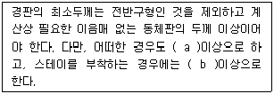
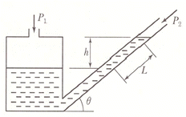
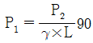
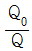
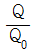
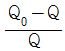
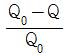
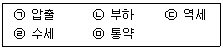

에너지관리산업기사 (2018-09-15 기출문제)
1과목: 열역학 및 연소관리
1. 보일러 절탄기 등에 발생할 수 있는 저온부식의 원인이 되는 물질은?
- 질소가스
- 아황산가스
- 바나듐
- 수소가스
(정답률: 87%)

2. 보일러 연료의 완전연소 시 공기비(m)의 일반적인 값은?
- m ＞ 1
- m = 1
- m ＜ 1
- m = 0
(정답률: 71%)
3. 다음 중 집진효율이 가장 좋은 집진장치는 무엇인가?
- 중력식 집진장치
- 관성력식 집진장치
- 여과식 집진장치
- 원심력식 집진장치
(정답률: 76%)
4. 이상기체에 대한 설명으로 틀린 것은?
- 기체분자간의 인력을 무시할 수 있고 이상기체의 상태방정식을 만족하는 기체
- 보일-샤를의 법칙(Pv / T=Const)을 만족하는 기체
- 분자 간에 완전 탄성충돌을 하는 기체
- 일상생활에서 실제로 존재하는 기체
(정답률: 87%)
5. 중유연소의 취급에 대한 설명으로 틀린 것은?
- 중유를 적당히 예열한다.
- 과잉공기량을 가급적 많이 하여 연소시킨다.
- 연소용 공기는 적절히 예열하여 공급한다.
- 2차공기의 송입을 적절히 조절한다.
(정답률: 91%)
6. 다음 사이클에 대한 설명으로 옳은 것은?
- 오토사이클은 정압사이클이다.
- 디젤사이클은 정적사이클이다.
- 사바테사이클의 압력상승비(α)가 1인 상태가 디젤사이클이다.
- 오토사이클의 효율은 압축비가 증가에 따라 감소한다.
(정답률: 68%)
7. 고열원 227℃, 저열원 17℃의 온도범위에서 작동하는 카르노 사이클의 열효율은?
- 7.5%
- 42%
- 58%
- 92.5
(정답률: 66%)
8. 다음( )안에 들어갈 경판의 두께 기준에 대한 설명으로 바르게 짝지어진 것은?

- a : 6mm, b : 10mm
- a : 4mm, b : 8mm
- a : 4mm, b : 10mm
- a : 6mm, b : 8mm
(정답률: 75%)
9. 온도측정과 연관된 열역학의 기본법칙으로서 열적평형과 관련된 법칙은?
- 열역학의 제 0법칙
- 열역학의 제 1법칙
- 열역학의 제 2법칙
- 열역학의 제 3법칙
(정답률: 78%)
10. 1Kg의 물이 0℃에서 100℃까지 가열될 때 엔트로피의 변화량(KJ/K)은? (단, 물의 평균비열은 4.184KJ/Kg·K이다.)
- 0.3
- 1
- 1.3
- 100
(정답률: 64%)
11. 전체 일(W)을 면적으로 나타낼 수 있는 선도로서 가장 적합한 것은?
- P-T(압력-온도)선도
- P-V(압력-체적)선도
- h-s(엔탈피-엔트로피)선도
- T-V(온도-체적)선도
(정답률: 80%)
12. 매연의 발생 방지방법으로 틀린 것은?
- 공기비를 최소화하여 연소한다.
- 보일러에 적합한 연료를 선택한다.
- 연료가 연소하는데 충분한 시간을 준다.
- 연소실 내의 온도가 내려가지 않도록 공기를 적정하게 보낸다.
(정답률: 87%)
13. 포화수의 증발현상이 없고 액체와 기체의 구분이 없어지는 지점을 무엇이라 하는가?
- 삼중점
- 포화점
- 임계점
- 비점
(정답률: 89%)
14. 연료 1Kg을 연소시키는데 이론적으로 2.5Nm3의 산소가 소요된다. 이 연료 1Kg을 공기비 1.2로 연소시킬 때 필요한 실제공기량(Nm2/Kg)은?
- 11.9
- 14.3
- 18.5
- 24.4
(정답률: 55%)
15. 기체연료 연소장치 중 가스버너의 특징으로 틀린 것은?
- 공기비 제어가 불가능하다.
- 정확한 온도제어가 가능하다.
- 연소상태가 좋아 고부하연소가 용이하다.
- 버너의 구조가 간단하고 보수가 용이하다.
(정답률: 85%)
16. 고체연료의 일반적인 연소방법이 아닌 것은?
- 화격자연소
- 미분탄연소
- 유동층연소
- 예혼합연소
(정답률: 79%)
17. 증기 동력사이클의 기본 사이클인 랭킨사이클에서 작동유체의 흐름을 바르게 나타낸 것은?
- 펌프 → 응축기 → 보일러 → 터빈
- 펌프 → 보일러 → 응축기 → 터빈
- 펌프 → 보일러 → 터빈 → 응축기
- 펌프 → 터빈 → 보일러 → 응축기
(정답률: 73%)
18. 다음 중 공기와 혼합 시 폭발범위가 가장 넓은 것은?
- 메탄
- 프로판
- 일산화탄소
- 메틸알코올
(정답률: 68%)
19. 랭킨 사이클의 열효율 증대 방안이 아닌 것은?
- 응축기 압력을 낮춘다.
- 증기를 고온으로 가열한다.
- 보일러의 압력을 높인다.
- 응축기 온도를 높인다.
(정답률: 58%)
20. 노내의 압력이 부압이 될 수 없는 통풍방식은?
- 흡입통풍
- 압입통풍
- 평형통풍
- 자연통풍
(정답률: 65%)
2과목: 계측 및 에너지진단
21. 보일러 전열량을 크게하는 방법으로 틀린 것은?
- 보일러의 전열면적을 작게하고 열가스의 유동을 느리게 한다.
- 전열면에 부착된 스케일을 제거한다.
- 보일러수의 순환을 잘 시킨다.
- 연소율을 높인다.
(정답률: 87%)
22. 다음 중 부르돈관(Bourdon tube)압력계에서 측정된 압력은?
- 절대압력
- 게이지압력
- 진공압
- 대기압
(정답률: 84%)
23. 다음 중 SI기본단위에 속하지 않는 것은?
- 길이
- 시간
- 열량
- 광도
(정답률: 78%)
24. 보일러 열정산 시 측정할 필요가 없는 것은?
- 급수량 및 급수온도
- 연소용 공기의 온도
- 과열기의 전열면적
- 배기가스의 압력
(정답률: 59%)
25. 액주식 압력계의 액체로서 구비조건이 아닌 것은?
- 항상 액면은 수평으로 만들 것
- 온도변화에 의한 밀도의 변화가 적을 것
- 화학적으로 안정적이고 휘발성 및 흡수성이 클 것
- 모세관 현상이 적을 것
(정답률: 75%)
26. 다음 보일러 자동제어 중 증기온도 제어는?
- ABC
- ACC
- FWC
- STC
(정답률: 84%)
27. 자동제어장치에서 조절계의 종류에 속하지 않는 것은?
- 공기압식
- 전기식
- 유압식
- 증기식
(정답률: 71%)
28. 열전대의 종류 중 환원성이 강하지만 산화의 분위기에는 약하고 가격이 저렴하며 IC열전대라고 부르는 것은?
- 동-콘스탄탄
- 철-콘스탄탄
- 백금-백금로듐
- 크로멜-알루멜
(정답률: 77%)
29. 그림과 같은 경사관 압력계에서 P1의 압력을 나타내는 식으로 옳은 것은?


- P1 = P2 × γ × L × cosθ
- P1 = P2 × γ × L × tanθ
- P1 = P2 × γ × L × sinθ
(정답률: 77%)
30. 열전대가 있는 보호관 속에서 MgO, Al2O3를 넣고 길게 만든 것으로서 진동이 심하고 가소성이 있는 곳에 주로 사용되는 열전대는?
- 시이드(Sheath) 열전대
- CA(K형) 열전대
- 서미스트 열전대
- 석영관 열전대
(정답률: 66%)
31. 오차에 대한 설명으로 틀린 것은?
- 계측기 고유오차의 최대허용한도를 공차라 한다.
- 과실오차는 계통오차가 아니다.
- 오차는 “측정값-참값”이다.
- 오차율은 “참값/오차”이다.
(정답률: 73%)
32. 다음 중 열전대 온도계의 비금속 보호관이 아닌 것은?
- 석영관
- 자기관
- 황동관
- 카로런덤관
(정답률: 66%)
33. 보일러의 1마력은 한 시간에 몇 Kg의 상당증발량을 나타낼 수 있는 능력인가?
- 15.65
- 30.0
- 34.5
- 40.56
(정답률: 85%)
34. 보일러에 대한 인터록이 아닌 것은?
- 압력초과 인터록
- 온도초과 인터록
- 저수위 인터록
- 저연소 인터록
(정답률: 58%)
35. 미량성분의 양을 표시하는 단위인 ppm은?
- 1만분의 1단위
- 10만분의 1단위
- 100만분의 1단위
- 10억분의 1단위
(정답률: 82%)
36. 물탱크에서 h=10m, 오리피스의 지름이 5Cm일 때 오리피스의 유량은 약 몇 m2/s인가?
- 0.0275
- 0.1099
- 0.14
- 14
(정답률: 46%)
37. 다음 중 광학적 성질을 이용한 가스분석법은?
- 가스 크로마토그래피법
- 적외선 흡수법
- 오르자트법
- 세라믹법
(정답률: 71%)
38. 보일러의 자동제어에서 제어량의 대상이 아닌 것은?
- 증기압력
- 보일러수위
- 증기온도
- 급수온도
(정답률: 67%)
39. 다음 중 보일러 열정산을 하는 목적으로 가장 거리가 먼 것은?
- 연료의 성분을 알 수 있다.
- 열의 행방을 파악할 수 있다.
- 열설비 성능을 파악할 수 있다.
- 열의 손실을 파악하여 조업 방법을 개선할 수 있다.
(정답률: 79%)
40. 액면계의 특징에 대한 설명으로 옳지 않은 것은?
- 방사선식 액면계는 밀폐고압탱크나 부식성 탱크의 액면측정에 용이하다.
- 부자식 액면계는 초대형 지하탱크의 액면을 측정하기에 적합하다.
- 박막식 액면계는 저압밀폐탱크와 고농도액체 저장탱크의 액면측정에 용이하다.
- 유리관식 액면계는 지상탱크에 적합하며 직접적인 자동제어가 불가능하다.
(정답률: 62%)
3과목: 열설비구조 및 시공
41. 다음 중 에너지이용합리화법에 따라 검사대상 기기인 보일러의 검사유효기간이 1년이 아닌 검사는?
- 설치장소변경검사
- 개조검사
- 계속사용안전검사
- 용접검사
(정답률: 71%)
42. 에너지이용합리화법에 따라 검사의 전부 또는 일부를 면제할 수 있다. 다음 중 용접검사가 면제되는 경우에 해당되는 것은?
- 강철제보일러 중 전열면적이 5m2이하이고, 최고사용압력이 3.5MPa인 것
- 강철제보일러 중 헤더의 안지름이 200mm이고 전열면적이 10m2이며 최고사용압력이 0.35MPa인 관류보일러
- 압력용기 중 도체의 두께가 6mm이고 최고사용압력(MPa)과 내용적(m3)을 곱한 수치가 0.2이하인 것
- 온수보일러로서 전열면적이 15m2이고 최고사용압력이 0.35MPa인 것
(정답률: 60%)
43. 관을 구부렸다가 힘을 제거하면 탄성이 작용하여 다시 펴지는 현상을 무엇이라 하는가?
- 스프링백
- 브레이스
- 플렉시블
- 벨로즈
(정답률: 86%)
44. 원심력 송풍기의 회전수가 2500rpm일 때 송풍량은 150m3/min이었다. 회전수를 3000rpm으로 증가시키면 송풍량은(m3/min)?
- 259
- 216
- 180
- 125
(정답률: 65%)
45. 배관용 연결부속 중 관의 수리, 점검, 교체가 필요한 곳에 사용되는 것은?
- 플러그
- 니플
- 소켓
- 유니온
(정답률: 82%)
46. 다음 중 아담슨 조인트, 갤로웨이관과 관련이 있는 원통보일러는?
- 노통보일러
- 연관보일러
- 입형보일러
- 특수보일러
(정답률: 77%)
47. 검사대상 증기보일러에서 사용해야 하는 안전밸브는?
- 스프링식 안전밸브
- 지렛대식 안전밸브
- 중추식 안전밸브
- 복합식 안전밸브
(정답률: 85%)
48. 보일러의 부대장치에 대한 설명으로 옳은 것은?
- 윈드박스는 흡입통풍의 경우에 풍도에서의 정압을 동압으로 바꾸어 노 내에 유입시킨다.
- 보염기는 보일러 운전을 정지할 때 진화를 원활하게 한다.
- 플레임 아이는 연소 중에 발생하는 화염빛을 감지부에서 전기적 신호로 바꾸어 화염의 유무를 검출한다.
- 플레임 로드는 연소온도에 의하여 화염의 유무를 검출한다.
(정답률: 76%)
49. 보온재의 보온효율을 바르게 나타낸 것은? (단, Q0 : 보온을 하지 않았을 때 표면으로부터의 방열량, Q : 보온을 하였을 때 표면으로부터의 방열량이다.)




(정답률: 72%)
50. 내화벽돌이나 단열벽돌을 쌓을 때 유의사항으로 틀린 것은?
- 열의 이동을 막기 위하여 불꽃이 접촉하는 부분에 단열벽돌을 쌓고 그 다음에 내화벽돌을 쌓는다.
- 물기가 없는 건조한 것과 불순물을 제거한 것을 쌓는다.
- 내화 모르타르는 화학조성이 사용 내화벽돌과 비슷한 것을 사용한다.
- 내화벽돌과 단열벽돌 사이에는 내화 모르타르를 사용한다.
(정답률: 78%)
51. 기수분리기에 대한 설명으로 옳은 것은?
- 보일러에 투입되는 연소용 공기 중에서 수분을 제거하는 장치
- 보일러 급수 중에 포함되어 있는 공기를 제거하는 장치
- 증기사용처에서 증기사용 후 물과 증기를 분리하는 장치
- 보일러에서 발생한 증기 중에 남아있는 물방울을 제거하는 장치
(정답률: 69%)
52. 에너지이용합리화법에 따라 검사대상기기설치자가 변경되는 경우 새로운 검사대상기기의 설치자는 그 변경일로부터 며칠 이내에 신고서를 공단이사장에게 제출해야 하는가?
- 7일
- 10일
- 15일
- 30일
(정답률: 60%)
53. 불연속식 가마로서 바닥은 직사각형이며 여러 개의 흡입구멍이 연도에 연결되어있고 화교가 버너 포트의 앞쪽에 설치되어 있는 것은?
- 도염식가마
- 터널가마
- 둥근가마
- 호프만가마
(정답률: 66%)
54. 발열량이 5500kcal/kg인 석탄을 연소시키는 보일러에서 배기가스 온도가 400℃일 때 보일러의 열효율(%)은? (단, 연소가스량은 10Nm3/kg, 연소가스의 비열은 0.33kcal/Nm3·℃, 실온과 외기온은 0℃이며, 미연분에 의한 손실과 방사에 의한 열손실은 무시한다.)
- 64
- 70
- 76
- 80
(정답률: 50%)
55. 돌로마이트 내화물에 대한 설명으로 틀린 것은?
- 염기성 슬래그에 대한 저항이 크다.
- 소화성이 크다.
- 내화도는 SK26~30이다.
- 내스폴링성이 크다.
(정답률: 75%)
56. 에너지이용합리화법에 따라 특정열사용기자재 중 온수보일러를 설치하는 경우 제 몇 종 난방시공자가 시공할 수 있는가?
- 제 1종
- 제 2종
- 제 3종
- 제 4종
(정답률: 78%)
57. 특수 열매체 보일러에서 사용하는 특수열매체로 적합하지 않은 것은?
- 다우섬
- 카네크롤
- 수은
- 암모니아
(정답률: 75%)
58. 에너지이용합리화법에 따라 검사대상기기의 계속사용검사 중 산업통상자원부령으로 정하는 항목의 검사에 불합격한 경우 일정기간 내 그 검사에 합격할 것을 조건으로 계속 사용을 허용한다. 그 기간을 불합격한 날부터 몇 개월 이내인가? (단, 철금속가열로는 제외한다.)
- 6개월
- 7개월
- 8개월
- 10개월
(정답률: 89%)
59. 구조가 간단하여 취급이 용이하고 수리가 간편하며, 수부가 크므로 열의 비축량이 크고 사용 증기량이 변동에 따른 발생증기의 압력변동이 작은 이점이 있으나 폭발 시 재해가 큰 보일러는?
- 원통형 보일러
- 수관식 보일러
- 관류보일러
- 열매체 보일러
(정답률: 72%)
60. 용광로에 장입하는 코크스의 역할로 가장 거리가 먼 것은?
- 열원으로 사용
- SIO2, P의 환원
- 광석의 환원
- 선철의 흡수
(정답률: 68%)
4과목: 열설비취급 및 안전관리
61. 보일러 수의 불순물 농도가 400ppm이고 1일 급수량이 5000L일 때, 이 보일러의 1일 분출량(L/day)은 얼마인가? (단, 급수 중의 불순물농도는 50ppm이고, 응축수는 회수하지 않는다.)
- 688
- 714
- 785
- 828
(정답률: 49%)
62. 에너지법에 따라 에너지 수급에 중대한 차질이 발생할 경우를 대비하여 비상시 에너지수급 계획을 수립하여야 하는 자는?
- 대통령
- 국토교통부장관
- 산업통상자원부장관
- 한국에너지공단이사장
(정답률: 76%)
63. 공급되는 1차 고온수를 감압하여 직결하는데, 여기에 귀환하는 2차 고온수 일부를 바이패스시켜 합류시킴으로서 고온수의 온도를 낮추어 시스템에 공급하도록 하는 고온수 난방방식을 무엇이라고 하는가?
- 고온수 직결방식
- 브리드인 방식
- 열 교환방식
- 캐스케이드 방식
(정답률: 61%)
64. 보일러 내부부식의 발생을 방지하는 방법으로 틀린 것은?
- 급수나 관수 중의 불순물을 제거한다.
- 급열, 급냉을 피하여 열응력작용을 방지한다.
- 보일러 수의 PH를 약산성으로 유지한다.
- 분출을 적당히 하여 농축수를 제거한다.
(정답률: 83%)
65. 에너지법에서 사용하는 용어의 정의로 옳은 것은?
- 에너지는 연료, 열 및 전기를 말한다.
- 연료는 석유, 석탄 및 핵연료를 말한다.
- 에너지공급자는 에너지를 개발, 판매하는 사업자를 말한다.
- 에너지사용자는 에너지공급시설의 소유자 또는 관리자를 말한다.
(정답률: 75%)
66. 보일러 급수의 외처리 방법 중 기폭법과 탈기법으로 공통으로 제거할 수 있는 가스는?
- 수소
- 질소
- 탄산가스
- 황화수소
(정답률: 70%)
67. 이온교환수지의 이온교환 능력이 소진되었을 때 재생 처리를 하는데, 이온교환처리장치의 운전 공정 순서로 옳은 것은?

- ㉠ → ㉤ → ㉢ → ㉡ → ㉣
- ㉢ → ㉡ → ㉠ → ㉤ → ㉣
- ㉠ → ㉡ → ㉢ → ㉣ → ㉤
- ㉢ → ㉤ → ㉠ → ㉣ → ㉡
(정답률: 66%)
68. 보일러 성능검사 시 증기건도 측정이 불가능한 경우, 강철제 증기보일러의 증기건도는 몇 % 인가?
- 90
- 93
- 95
- 98
(정답률: 71%)
69. 에너지이용합리화법에 따라 산업통상자원부장관이 효율관리기자재에 대하여 고시하여야 하는 사항에 해당되지 않는 것은?
- 에너지의 소비효율 또는 사용량의 표시
- 에너지의 소비효율 등급기준 및 등급표시
- 에너지의 소비효율 또는 생산량의 측정방법
- 에너지의 최저소비효율 또는 최고 사용량의 기준
(정답률: 82%)
70. 온수난방 배관에서 원칙적으로 배관 중 밸브류를 설치해서는 안 되는 곳은?
- 송수주관
- 환수주관
- 방출관
- 팽창관
(정답률: 81%)
71. 보일러 수면계 유리판의 파손 원인으로 가장 거리가 먼 것은?
- 프라이밍 또는 포밍 현상이 발생할 때
- 수면계의 너트를 너무 무리하게 조인 경우
- 유리관의 재질이 불량한 경우
- 외부에서 충격을 받았을 때
(정답률: 83%)
72. 표준 대기압에서 급수용으로 사용되는 물의 일반적인 성질에 관한 설명으로 틀린 것은?
- 물의 비중이 가장 높은 온도는 약 1℃이다.
- 임계압력은 약 22MPa이다.
- 임계온도는 약 374℃이다.
- 증발잠열은 약 2256KJ/Kg이다.
(정답률: 75%)
73. 온수발생보일러는 온수 온도가 얼마 이하일 때, 방출밸브를 설치하여야 하는가?
- 100℃
- 120℃
- 130℃
- 150℃
(정답률: 76%)
74. 다음 중 에너지이용 합리화법에 따라 특정열 사용기자재가 아닌 것은?
- 온수보일러
- 1종압력용기
- 터널가마
- 태양열온수기
(정답률: 67%)
75. 보일러의 점식을 일으키는 요인 중 국부전지가 유지되는 주요 원인으로 가장 밀접한 것은?
- 실리카 생성
- 염화마그네슘 생성
- PH상승
- 용존산소 존재
(정답률: 73%)
76. 신설 보일러에 행하는 소다 끓임에 대한 설명으로 옳은 것은?
- 보일러 내부에 부착된 철분, 유지분 등을 제거하는 방법
- 보일러 본체의 누수여부를 확인하는 작업
- 보일러 부속장치의 누수여부를 확인하는 작업
- 보일러수의 순환상태 및 증발력을 점검하는 작업
(정답률: 85%)
77. 저압 증기 난방장치의 하트포트 배관방식에서 균형관에 접속하는 환수주관의 분기 위치는 보일러 표준수면에서 약 몇 mm 아래가 적정한가?
- 30
- 50
- 80
- 100
(정답률: 80%)
78. 보일러의 외부 청소방법이 아닌 것은?
- 산세관법
- 수세법
- 스템 소킹법
- 워터 소킹법
(정답률: 80%)
79. 에너지이용합리화법에 의한 검사대상기기의 검사에 관한 설명으로 틀린 것은?
- 검사대상기기를 개조하여 사용하려는 자는 시·도지사의 검사를 받아야 한다.
- 검사대상기기의 계속사용검사를 받으려는 자는 유효기간 만료 전에 검사신청서를 제출하여야 한다.
- 검사대상기기의 설치장소를 변경한 경우에는 시·도지사의 검사를 받아야 한다.
- 검사대상기기를 사용 중지하는 경우에는 별도의 신고가 필요없다.
(정답률: 83%)
80. 보일러에서 압력차단(제한)스위치의 작동압력은 어느 정도 조정하여야 하는가?
- 사용압력과 같게 조정한다.
- 안전밸브 작동압력과 같게 조정한다.
- 안전밸브 작동압력보다 약간 낮게 조정한다.
- 안전밸브 작동압력보다 약간 높게 조정한다.
(정답률: 84%)